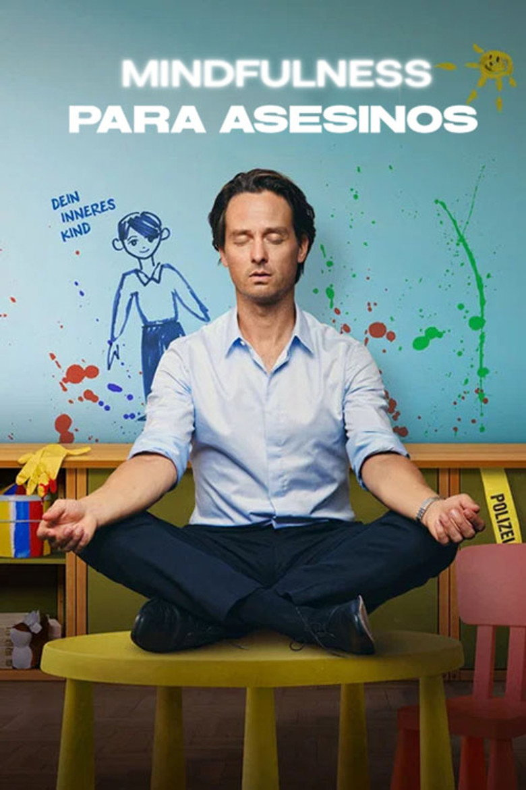
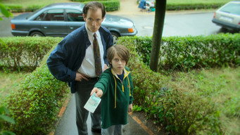
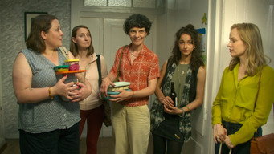
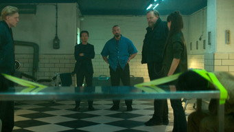
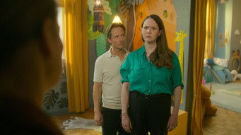
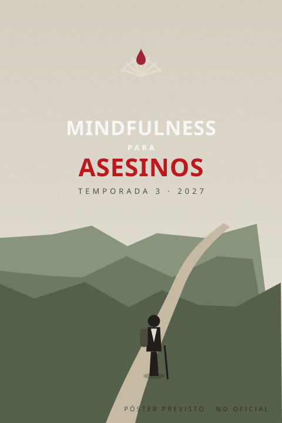

Abrí una temporada por vez. Los episodios marcados son los que dejan consecuencias. La tercera todavía no dejó ninguna: se está filmando.
01El curso20248 episodios3 con consecuencias
T1poster pendiente · temporada-01.jpg
Björn empieza el curso de Breitner para salvar su matrimonio y encuentra, en la primera lección, una forma de resolver el problema con su cliente. Lo que sigue es aprender a vivir con la solución: esconderla, administrarla y, sobre todo, mantener la calma.
01Respirar
02Felicidad
03Miedo
04Desvergüenza
05Pánico
06Lluvia de ideas
07Ira
08Muerte
Estreno
31 de octubre de 2024Los ocho episodios juntos, en Netflix
Ranking
Número 1 globalTop 10 de Netflix en habla no inglesa
Adapta
Achtsam morden (2019)La primera novela de Karsten Dusse
Lección clave
Respirar. Y soltar.Dragan aprende la segunda parte a la fuerza
02La práctica avanzada20268 episodios6 con consecuencias

T2poster pendiente · temporada-02.jpg
Con el equilibrio recuperado y una organización entera que ahora depende de él, Björn descubre que la calma también se sostiene con trabajo. Nuevos socios, viejas deudas y una fiscal que no suelta nada.
01Vacaciones

02Realidad

03Padres

04Creatividad
05Conocimiento
06Error
07Duda

08Moral
Estreno
28 de mayo de 2026Ocho episodios nuevos, en Netflix
Ranking
Top 10 globalSexta en habla no inglesa en su primera semana
Adapta
Das Kind in mir will achtsam morden (2020)La segunda novela: el niño interior de Björn
Lección clave
Aceptar al niño interior.El de Björn tiene ideas muy poco infantiles
03Al borde del mundo20278 episodios previstosen rodaje

Netflix la confirmó en enero de 2026. Adapta la tercera novela de Karsten Dusse, Achtsam morden am Rande der Welt («Matar con conciencia al borde del mundo»): Björn, en plena crisis de la mediana edad, se toma el verano para hacer una peregrinación a pie. Camina, respira, mira el paisaje. Y un compañero de ruta se mete en un problema muy poco espiritual.
Base
La tercera novela de la sagaPublicada en 2021; hay seis libros en total
Escenario
Una peregrinación de veranoEn la novela, el Camino de Santiago
Rodaje
Segunda mitad de 2026Con Tom Schilling de nuevo como Björn